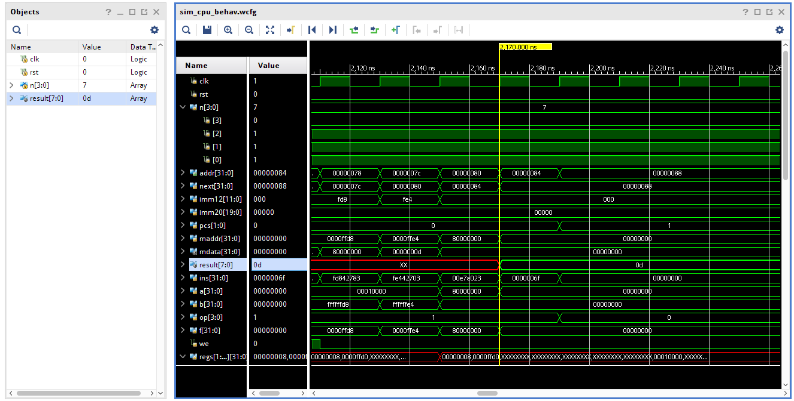

前言
之前用 Verilog 模拟实现了一个简易的 RISC-V 处理器（RV32I 指令集）。为了跑测试程序，我们的这个处理器自然也要带上存储器，所以实际上它是一台简单的计算机。为了简化设计，这台计算机基于哈佛架构。简单来说，就是数据和指令分开存储，机器读取。想要运行程序，就要把汇编代码编译出来，烧写到我们的 ROM 上。
为了方便调试，我对 CPU 进行了一些简单的约定：
- 外界可以通过8个二进制开关对计算机输入一个值。这个值可以在内存地址
0x40000000处读取到。 - 8个 LED 灯与内存地址
0x80000000上的值相绑定。也就是这里的值，将会以二进制的形式显示在 8 个 LED 灯上。 - 处理器加电时会产生 RST 信号。寄存器收到 RST 信号时，所有的寄存器将会被置零。这个约定是为了方便初始化寄存器。
我们的目标是在我们的 RISC-V 计算机上成功运行一个 Fibonacci 数运算程序。流程是：
- 拨动8个开关，作为输入。
- 给板子加电。
- Fibonacci 运算程序从
0x40000000处读取8位开关的输入。 - Fibonacci 运算程序进行计算。
- Fibonacci 运算程序将结果写到
0x80000000这个地址上。 - 8位 LED 灯以二进制的形式显示
0x80000000处的内容。
用汇编实现这个程序很轻松。
.globl __start
.globl end
.text
__start:
lui x1,0x0;
lw x10,0x40000000(x0);
addi x2,x0,3;
addi x5,x0,1;
blt x10,x2,end;
addi x1,x1,12; # init
addi x6,x0,1;
sw x6,-8(x1);
sw x6,-4(x1);
main:
lw x3,-8(x1);
lw x4,-4(x1);
add x5,x3,x4;
sw x5,0(x1);
beq x2,x10,end;
addi x1,x1,4;
addi x2,x2,1;
beq x0,x0,main;
end:
sw x5,0x80000000(x0);
那么，我们是否可以将 C 语言程序移植到这个平台上呢？
还是交叉编译那一套–借助 RISC-V 交叉编译工具链，我们可以将 C 语言程序移植到我们造的计算机上。
正文
获得工具链
我们注意到，RISC-V 工具链分为两个版本：
- Newlib 版本，所有的命令开头是
riscv64-unknown-elf-。 - Linux 版本，所有的命令开头是
riscv64-linux-gnu-。
那么我们应该选哪个呢？经过试验两者产生的机器码（.text部分）并无区别，但我建议选择 Newlib 版本的工具链。具体原因将在后面说。
Arch Linux 用户们可以直接在 AUR 上获取 riscv64-unknown-elf-gcc 和 riscv64-unknown-elf-newlib 这两个包。安装后你将获得两个版本的工具链。
你可以从源代码自行构建 – RISC-V GNU Compiler Toolchain。
主程序的编写
利用 C 语言的指针操作，我们可以直接读写内存。下面是实现 Fibonacci 数计算的代码：
int main(){
int* n; // Input
n = (int*) 0x40000000; // Point input to 0x40000000
int n1 = 0;
int n2 = 1;
int n3;
int i;
for (i = 2; i < (*n) + 1; ++i){
n3 = n1 + n2;
n1 = n2;
n2 = n3;
}
int* result; // Output
result = (int*) 0x80000000; // Point output to 0x40000000
*result = n3; // Write result to 0x40000000
for(;;){
} // Endless loop, to hold on the result
return 0;
}
注意：
- 我们现在在为裸机编写 C 语言程序，不能引用标准库中的函数，如 printf。
- 由于内存紧张，我们尽量不要用递归。
- 最后要写一个死循环，相当于停机。
现在我们的主程序已经编写完毕了，下面我们要编译它。
riscv64-unknown-elf-gcc -c -nostdlib -march=rv32i -mabi=ilp32 main.c -o main.o
-c选项是编译、汇编到目标代码，不进行链接。-nostdlib告诉编译器不要把标准库编译进去。-march=rv32i -mabi=ilp32用于指定指令集架构和 ABI。
编译后，我们可以得到 main.o，它是一个 ELF 文件。我们只需要 .text 部分的机器指令，所以用 objcopy 对它进行处理：
riscv64-unknown-elf-objcopy -O binary -j .text main.o main.bin
-O binary选项用于输出纯二进制文件。-j .text是告诉它只保留.text部分。
经过处理，生成的二进制文件只含有机器指令。但此时的程序并不能直接运行。我们用 objdump 进行反编译，看看生成的机器码是怎么样的：
➜ riscv64-unknown-elf-objdump -D -b binary main.bin -mriscv
main.bin: file format binary
Disassembly of section .data:
0000000000000000 <.data>:
0: fd010113 addi sp,sp,-48
4: 02812623 sw s0,44(sp)
8: 03010413 addi s0,sp,48
c: 400007b7 lui a5,0x40000
...
lui a5,0x40000 显然对应我们代码的开头（将变量 n 指向 0x40000000）。GCC在前面加了三条指令，而第一句就将sp寄存器减去了48。sp为负，程序肯定不能正常运行。
这三条指令用于设置 Stack Pointer(
sp) 和 Frame Pointer(s0)。
所以，在运行 C 语言程序之前，我们需要给 sp 寄存器设置一个初始值。这个不难，一行汇编代码就能搞定：lui sp, 0x10。但是这行代码怎么放，又是一个问题。
将汇编语句连接到主程序
下面我们将探索三种思路：
- 内联汇编
- 直接用 cat 合并两个二进制文件
- 用 ld 连接汇编和 C 语言程序
内联汇编？
我们可不可以在 C 语言里内联汇编实现对 sp 的初始化呢？答案是否定的。我们在 main 的第一行加一句内联汇编：
int main(){
asm("lui sp,0x10");
int* n; // Input
n = (int*) 0x40000000; // Point input to 0x40000000
...
然后尝试反编译，看看这句话被加到了哪里：
➜ riscv64-unknown-elf-objdump -D -b binary main.bin -mriscv
main.bin: file format binary
Disassembly of section .data:
0000000000000000 <.data>:
0: fd010113 addi sp,sp,-48
4: 02812623 sw s0,44(sp)
8: 03010413 addi s0,sp,48
c: 00010137 lui sp,0x10
10: 400007b7 lui a5,0x40000
...
可以看到，内联汇编被放在了0xc的位置，在设置栈顶指针之后才被调用。很显然这是马后炮。我们要换一种方法。
方法1 用 cat 合并
我们先写一个汇编文件，命名为init.s。内容如下
lui sp, 0x10
然后我们用相同的方法编译它，并把它剪切成纯二进制格式：
riscv64-unknown-elf-gcc -c -nostdlib -march=rv32i -mabi=ilp32 init.s -o init.o
riscv64-unknown-elf-objcopy -O binary -j .text init.o init.bin
再对init.bin进行反编译，我们可以看到：
➜ riscv64-unknown-elf-objdump -D -b binary init.bin -mriscv
init.bin: file format binary
Disassembly of section .data:
0000000000000000 <.data>:
0: 00010137 lui sp,0x10
汇编生成的机器码没有任何问题，它只含有一句话。我们用 cat 将 init.bin 附到 main.bin 前面（注意调用顺序）：
cat init.bin main.bin > final_cat.bin
可以看到我们生成了 final_cat.bin。对它进行反编译，我们可以看到：
➜ riscv64-unknown-elf-objdump -D -b binary final_cat.bin -mriscv
final_cat.bin: file format binary
Disassembly of section .data:
0000000000000000 <.data>:
0: 00010137 lui sp,0x10
4: fd010113 addi sp,sp,-48 # 0xffd0
8: 02812623 sw s0,44(sp)
c: 03010413 addi s0,sp,48
...
我们的lui sp,0x10被成功加到了最前面。此时将 final_cat.bin 烧录进 ROM，可以看到程序正常运行。
总结一下，用 cat 合并的步骤是：
- 分别编写 C 语言部分和汇编部分，编译后剪成纯二进制格式
- 用 cat 将两个 binary 合并在一起，注意顺序。
- 烧录，运行。
方法2 用 ld 合并
直接缝合两个二进制文件在这个例子中没有问题，因为main.bin里面的地址都是相对地址，在它前面加一个指令并不会导致后面的指令出问题。但是更正规的做法是用 ld 缝合两个部分：在汇编中，我们导入 C 语言的 main 函数，在汇编程序中调用它。
init.s 改写如下：
.text
.globl main
lui x2, 0x00010
call main
然后我们编译这些源文件：
riscv64-unknown-elf-gcc -c -nostdlib init.s init.o
riscv64-unknown-elf-gcc -c -nostdlib main.c main.o
riscv64-unknown-elf-ld -melf32lriscv -o final.o init.o main.o
riscv64-unknown-elf-objcopy -O binary final.o final_ld
其中 ld 的 -melf32lriscv 参数用于指定架构。
我们再反编译一下结果，看一下用 ld 生成的和 cat 生成的二进制文件有什么区别：
➜ riscv64-unknown-elf-objdump -b binary -D -mriscv final_ld
final_ld: file format binary
Disassembly of section .data:
0000000000000000 <.data>:
0: 00010137 lui sp,0x10
4: 004000ef jal ra,0x8
8: fd010113 addi sp,sp,-48 # 0xffd0
c: 02812623 sw s0,44(sp)
10: 03010413 addi s0,sp,48
...
可以看到，在0x4的位置多了一条 jal ra,0x8。这是 ld 进行链接的结果。
将程序烧录进 ROM ，运行仿真，可以看到我们的结果被正确计算：

总结一下，用 ld 连接的步骤是：
- 编写 C 语言部分，编译成 ELF 文件。
- 编写汇编语言部分，它负责初始化栈顶指针。也编译成 ELF 文件。
- 用 ld 将两个部分连接到一起。
- 连接后用
objcopy剪成纯二进制文件。 - 烧录，运行。
使用 Makefile 自动构建
无论是方法1还是方法2，编译流程都比较复杂，借用某名星的话：TMD 烦死了。所以我们可以用 Makefile 完成编译连接剪切一整套流程：
CROSS_COMPILE=riscv64-unknown-elf-
CC=$(CROSS_COMPILE)gcc
CFLAGS=-c -nostdlib -march=rv32i -mabi=ilp32
OBJCOPY=$(CROSS_COMPILE)objcopy
OBJCOPYFLAGS=-O binary -j .text
LD=$(CROSS_COMPILE)ld
LDFLAGS=-melf32lriscv
all: main.o init.o
$(LD) $(LDFLAGS) -o final.o init.o main.o
$(OBJCOPY) $(OBJCOPYFLAGS) final.o final
main.o: main.c
$(CC) $(CFLAGS) main.c -o main.o
init.o: init.s
$(CC) $(CFLAGS) init.s -o init.o
clean:
rm -f *.o
rm -f *.bin
FAQ
Newlib 和 Linux 的工具链有什么区别
Newlib 是不带 Glibc 的，也不支持动态链接。
这两个工具链生成的 ELF 文件略有区别。下面是 Linux 工具链生成的 ELF文件，我们对其 objdump：
➜ riscv64-linux-gnu-objdump -x fibl
fibl: file format elf32-littleriscv
fibl
architecture: riscv:rv32, flags 0x00000102:
EXEC_P, D_PAGED
start address 0x000100b8
Program Header:
LOAD off 0x00000000 vaddr 0x00010000 paddr 0x00010000 align 2**12
filesz 0x000001a0 memsz 0x000001a0 flags r-x
NOTE off 0x00000094 vaddr 0x00010094 paddr 0x00010094 align 2**2
filesz 0x00000024 memsz 0x00000024 flags r--
STACK off 0x00000000 vaddr 0x00000000 paddr 0x00000000 align 2**4
filesz 0x00000000 memsz 0x00000000 flags rw-
Sections:
Idx Name Size VMA LMA File off Algn
0 .note.gnu.build-id 00000024 00010094 00010094 00000094 2**2
CONTENTS, ALLOC, LOAD, READONLY, DATA
1 .text 000000e8 000100b8 000100b8 000000b8 2**2
CONTENTS, ALLOC, LOAD, READONLY, CODE
2 .comment 00000012 00000000 00000000 000001a0 2**0
CONTENTS, READONLY
SYMBOL TABLE:
no symbols
下面是 Newlib 工具链生成的 ELF 文件的 objdump 结果：
➜ riscv64-unknown-elf-objdump -x fibu
fibu: file format elf32-littleriscv
fibu
architecture: riscv:rv32, flags 0x00000102:
EXEC_P, D_PAGED
start address 0x00010054
Program Header:
LOAD off 0x00000000 vaddr 0x00010000 paddr 0x00010000 align 2**12
filesz 0x0000013c memsz 0x0000013c flags r-x
Sections:
Idx Name Size VMA LMA File off Algn
0 .text 000000e8 00010054 00010054 00000054 2**2
CONTENTS, ALLOC, LOAD, READONLY, CODE
1 .comment 00000022 00000000 00000000 0000013c 2**0
CONTENTS, READONLY
2 .riscv.attributes 0000001c 00000000 00000000 0000015e 2**0
CONTENTS, READONLY
SYMBOL TABLE:
no symbols
可以看到，两者的差别在于 .note.gnu.build-id 和 .riscv.attributes 这两个部分。不过这些都是无关的注释信息。我们再用 objcopy 把 ELF 文件处理一下，只保留 .text 部分。可以看到，生成的纯二进制文件是一样的。
因为我们只需要.text部分的机器码，并且我们的程序也不涉及动态链接的问题。所以在这个代码上，用这两个工具链并无实质上的区别。不过我仍然推荐 Newlib 版本的工具链，因为它只有静态编译，更适合嵌入式编程这个场景。
32位的处理器为什么要用 riscv64 的工具链
这个问题我也注意到了。在一些老的文章，例如这篇RISC-V Compile Targets, GCC，里面会提到riscv32-开头的工具链。但实际上现在的 riscv64 工具链已经包含了 32 位支持：
Yeah, that confused me too. The riscv toolchain is a little funny in that way. Upstream recommends you just build the riscv64-unknown-elf-gcc and then compile with -march=rv32i -mabi=ilp32 (or whatever suits your platform).
来源：AUR 上的讨论。
直接用 cat 合并，不用担心重定位的问题吗
不用。因为所有的跳转都基于相对地址。
反编译可以发现，cat 缝合的二进制，在 0x2c 处有一句j 0x5c。同样的代码出现在 ld 版本的 0x30 处，并且变成了 j 0x60。但它们的机器码是一样的，都是0x0300006F。所以用 cat 在 main.bin 前面加一万句话都没事。
我用两种方法都编译了一次，发现 ld 生成和 cat 直接缝合的两个二进制程序，实际上只差了一句 jal ra,0x8。这句是调用约定，不过我们的 main 函数并不需要返回，所以无所谓啦。
内存大小的问题
我们在这里规定的栈顶指针初始值是0x10000。请根据你的实际内存大小进行修改。
如果你有兴趣进行综合，那么一定要注意，有些板子的内存是不够的，例如 EGO-1。但 Minisys 好像是可以的。
最后
在写文章的过程中，发现自己之前是误打误撞做出来的，能跑起来纯属瞎猫碰上死耗子。这个文章写了一整天，人都快没了，已经被机器码恶心死了（bushi
在编写过程中参考了以下资料：
RISC-V Online Interpreter （十分推荐，可以在线运行 RISC-V 汇编指令）
StackOverflow - Newlib: embedded vs desktop
AUR (en) - riscv64-unknown-elf-gcc
另外感谢王老师提供的 CPU 讲解课程及实验器械，以及孟老师对一些问题的解答。
上次修改於 2021-01-14